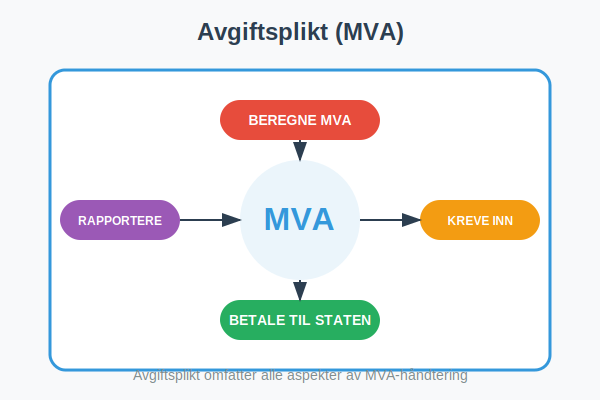
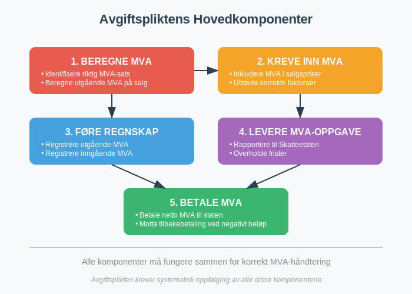
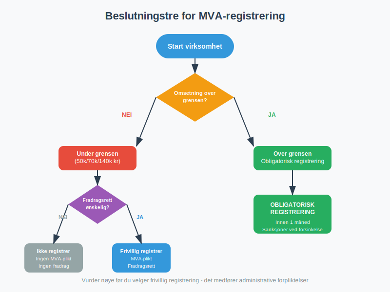
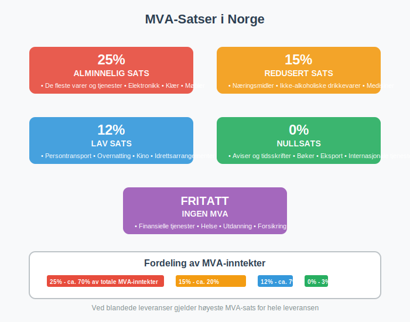
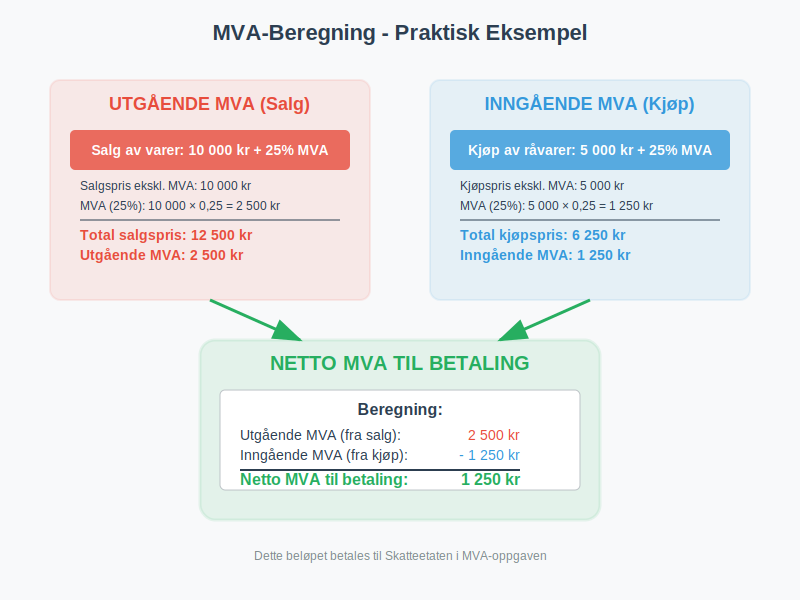
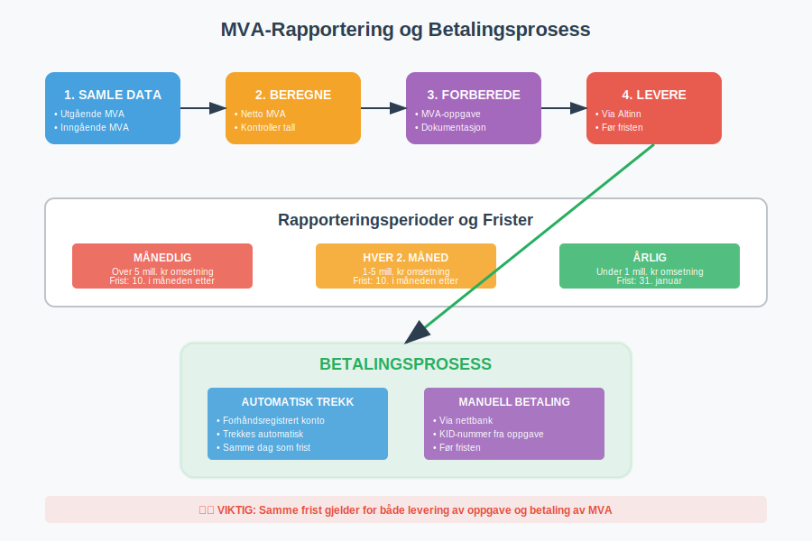
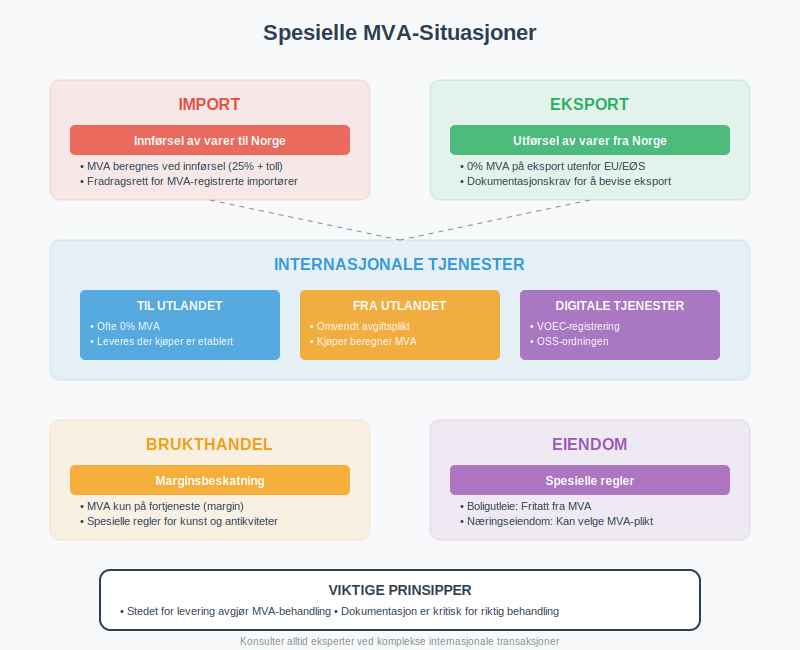
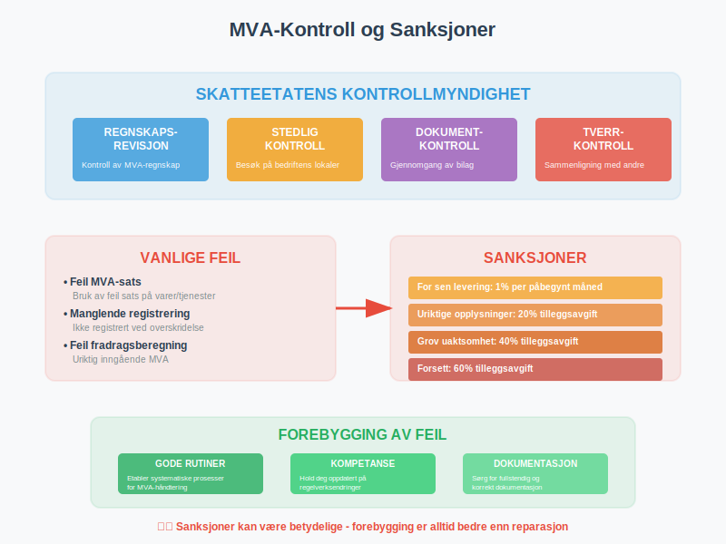
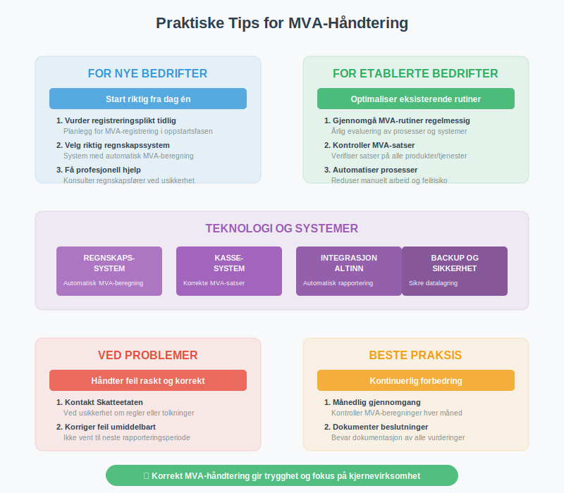

Avgiftsplikt (MVA) er plikten til å beregne, kreve inn og betale merverdiavgift til staten. Dette er en fundamental del av det norske skattesystemet som påvirker de fleste bedrifter som selger varer og tjenester i Norge.
For en grundig oversikt over Merverdiavgift, se vår omfattende guide. For en detaljert innføring i moms, se Hva er Moms (MVA)?.

Hva er Avgiftsplikt?
Avgiftsplikt innebærer at en virksomhet har juridisk ansvar for å:
- Beregne MVA på salg av varer og tjenester
- Kreve inn MVA fra kunder
- Betale MVA til Skatteetaten
- Føre korrekt regnskap over MVA-transaksjoner
- Levere MVA-melding til rett tid
Dette er et klassisk eksempel på egenmelding - selvrapportering hvor virksomheten selv har ansvar for å beregne, rapportere og betale riktig MVA til myndighetene.
Avgiftsplikten oppstår når virksomheten oppfyller visse kriterier for omsetning og aktivitet, og er en viktig del av regnskapet til enhver virksomhet.

Når Oppstår Avgiftsplikt?
Omsetningsgrense
Avgiftsplikt oppstår når virksomheten når omsetningsgrensen:
| Virksomhetstype | Omsetningsgrense | Registreringsplikt |
|---|---|---|
| Alminnelig virksomhet | 50 000 kr | Obligatorisk |
| Primærnæring | 70 000 kr | Obligatorisk |
| Kunstnere og frilansere | 50 000 kr | Obligatorisk |
| Ideelle organisasjoner | 140 000 kr | Obligatorisk |
Frivillig Registrering
Virksomheter under omsetningsgrensen kan frivillig registrere seg for MVA hvis:
- De har fradragsberettiget inngående MVA
- De planlegger å nå omsetningsgrensen
- De ønsker å fremstå som profesjonelle
- De handler med andre MVA-registrerte virksomheter

MVA-Satser i Norge
Norge har differensierte MVA-satser avhengig av type vare eller tjeneste:
Gjeldende Satser
| MVA-Sats | Anvendelse | Eksempler |
|---|---|---|
| 25% | Alminnelig sats | De fleste varer og tjenester |
| 15% | Redusert sats | Næringsmidler, ikke-alkoholiske drikkevarer |
| 12% | Lav sats | Persontransport, overnatting, kino |
| 0% | Nullsats | Aviser, bøker, eksport |
| Fritatt | Ingen MVA | Finansielle tjenester, helse, utdanning |
Kontoplan: For å bokføre inngående merverdiavgift med lav sats (12%) brukes konto 1614. Les mer i Konto 1614 - Inngående merverdiavgift lav sats.
Spesielle Regler
- Blandede leveranser: Høyeste sats gjelder
- Tjenester til utlandet: Ofte 0% eller fritatt – se Hva er Fjernleverbare Tjenester i Regnskap? for mer informasjon
- Tjenester fra utlandet: Omvendt avgiftsplikt kan gjelde
- Import: 25% + eventuelle tollsatser
- Brukthandel: Spesielle marginsregler

Registrering i MVA-registeret
Alle virksomheter som oppfyller kravene til avgiftsplikt må registrere seg i MVA-registeret. Dette er Skatteetatens offisielle register over alle MVA-registrerte virksomheter i Norge.
Registreringsprosess
- Vurder registreringsplikt basert på omsetning
- Søk om registrering via Altinn eller Skatteetaten
- Få tildelt organisasjonsnummer hvis ikke allerede har det
- Motta MVA-nummer fra Skatteetaten
- Start MVA-rapportering fra registreringsdato
For en detaljert gjennomgang av hele registreringsprosessen, plikter og rettigheter som følger med MVA-registrering, samt konsekvenser av manglende registrering, se vår omfattende guide til MVA-registeret.
Nødvendig Dokumentasjon
- Organisasjonsnummer eller søknad om dette
- Beskrivelse av virksomheten og aktiviteter
- Forventet omsetning og MVA-grunnlag
- Regnskapsopplysninger hvis virksomheten er etablert
Frister for Registrering
- Innen 1 måned etter at omsetningsgrensen er nådd
- Før oppstart hvis man velger frivillig registrering
- Senest ved første MVA-pliktige salg
Beregning av MVA
Utgående MVA (MVA på Salg)
Utgående MVA = Salgspris × MVA-sats / (100 + MVA-sats)
Eksempel:
- Salgspris inkl. MVA: 1 250 kr
- MVA-sats: 25%
- Utgående MVA: 1 250 × 25 / 125 = 250 kr
- Salgspris ekskl. MVA: 1 000 kr
Inngående MVA (MVA på Kjøp)
Inngående MVA = Kjøpspris × MVA-sats / (100 + MVA-sats)
Eksempel:
- Kjøpspris inkl. MVA: 625 kr
- MVA-sats: 25%
- Inngående MVA: 625 × 25 / 125 = 125 kr
- Kjøpspris ekskl. MVA: 500 kr
Netto MVA til Betaling
Netto MVA = Utgående MVA - Inngående MVA

Fradragsrett for Inngående MVA
Generelle Prinsipper
- Full fradragsrett: For kjøp til MVA-pliktig virksomhet
- Ingen fradragsrett: For private formål eller fritatte aktiviteter
- Delvis fradragsrett: Ved blandet bruk (privat/næring)
Fradragsberettigede Utgifter
- Råvarer og handelsvarer til videresalg (spesielt relevant for detaljhandel)
- Driftsmidler som maskiner, utstyr, biler
- Tjenester som regnskap, juridisk bistand, markedsføring
- Driftskostnader som strøm, telefon, husleie
Ikke-Fradragsberettigede Utgifter
- Private utgifter og representasjon over grenser
- Kjøp til fritatte aktiviteter (helse, utdanning, finans)
- Personbiler (med visse unntak)
- Alkohol og tobakk til representasjon
MVA-Oppgave og Rapportering
MVA-registrerte virksomheter må levere MVA-melding til Skatteetaten i henhold til fastsatte frister. Denne meldingen inneholder detaljert informasjon om virksomhetens MVA-transaksjoner for perioden.
Rapporteringsperioder
| Omsetning (årlig) | Rapporteringsperiode | Frist |
|---|---|---|
| Under 1 mill. kr | Årlig | 31. januar |
| 1-5 mill. kr | Hver 2. måned | 10. i måneden etter |
| Over 5 mill. kr | Månedlig | 10. i måneden etter |
Innhold i MVA-Oppgaven
- Utgående MVA per sats og kode
- Inngående MVA som kan fradras
- Netto MVA til betaling eller tilbakebetaling
- Spesifikasjoner av omsetning og kjøp
- Eventuelle justeringer og korrigeringer
Levering og Betaling
- Elektronisk levering via Altinn eller regnskapssystem
- Automatisk trekk fra bankkonto eller manuell betaling
- Samme frist for levering og betaling
- Forsinkelsesgebyr ved for sen levering/betaling

Fritak fra Avgiftsplikt
Objektive Fritak
Visse aktiviteter er fritatt fra MVA uavhengig av omsetning:
- Finansielle tjenester: Bank, forsikring, verdipapirtjenester
- Helse- og sosialtjenester: Leger, tannleger, fysioterapeuter
- Undervisning: Skoler, universiteter, kursvirksomhet
- Kultur og idrett: Museer, biblioteker, idrettslag
- Eiendomsutleie: Boligutleie og visse næringseiendommer
Betingede Fritak
- Småbedrifter under omsetningsgrensen
- Primærnæring under 70 000 kr omsetning
- Ideelle organisasjoner under 140 000 kr omsetning
Konsekvenser av Fritak
- Ingen utgående MVA på salg
- Ingen fradragsrett for inngående MVA
- Lavere administrative kostnader
- Mulig konkurranseulempe mot MVA-registrerte
Spesielle Situasjoner
Import og Eksport
Import:
- MVA beregnes ved innførsel til Norge
- Samme sats som ved innenlandsk salg
- Fradragsrett for importør hvis MVA-registrert
Eksport:
- 0% MVA på eksport til land utenfor EU/EØS
- Dokumentasjonskrav for å dokumentere eksport
- Full fradragsrett for kostnader knyttet til eksport
Tjenester til Utlandet
- Hovedregel: Leveres der kjøper er etablert
- 0% MVA på mange tjenester til utlandet
- Spesielle regler for transport, eiendom, kultur
- Stedbunden tjeneste: Tjenester levert på et geografisk bestemt sted – se Stedbunden tjeneste for detaljer
- Fjernleverbare tjenester har egne stedsbestemmelsesregler
Brukthandel og Kunstgjenstander
- Marginsbeskatning: MVA kun på fortjeneste
- Spesielle regler for antikviteter og kunstgjenstander
- Dokumentasjonskrav for innkjøpspriser

Regnskapsføring av MVA
For en komplett guide til momsregnskap, se vår detaljerte artikkel om alle aspekter ved MVA-regnskapsføring.
Kontoplan for MVA
Balanseposter:
- 2700 - Utgående merverdiavgift (kortsiktig gjeld)
- 2701 - Inngående merverdiavgift (kortsiktig fordring)
- 2740 - Oppgjørskonto for MVA (netto posisjon)
Resultatposter:
- MVA påvirker ikke resultatet direkte
- Kun netto kontantstrøm påvirker likviditeten
Praktisk Regnskapsføring
Ved salg:
Debet: Kundefordringer 1 250 kr
Kredit: Salgsinntekt 1 000 kr
Kredit: Utgående MVA 250 kr
Ved kjøp:
Debet: Varekjøp 500 kr
Debet: Inngående MVA 125 kr
Kredit: Leverandørgjeld 625 kr
Ved MVA-oppgjør:
Debet: Utgående MVA 250 kr
Kredit: Inngående MVA 125 kr
Kredit: Oppgjørskonto MVA 125 kr
Kontroll og Sanksjoner
Skatteetatens Kontrollmyndighet
- Regnskapsrevisjon: Kontroll av MVA-regnskapet
- Stedlig kontroll: Besøk på virksomhetens lokaler
- Dokumentkontroll: Gjennomgang av bilag og systemer
- Tverrkontroll: Sammenligning med andre opplysninger
Vanlige Feil og Mangler
- Feil MVA-sats på varer og tjenester
- Manglende registrering ved overskridelse av grenser
- Feil fradragsberegning for inngående MVA
- For sen levering av MVA-oppgaver
- Mangelfulle bilag og dokumentasjon
Sanksjoner ved Overtredelser
| Overtredelse | Sanksjon | Beløp/Prosent |
|---|---|---|
| For sen levering | Forsinkelsesgebyr | 1% per påbegynt måned |
| Uriktige opplysninger | Tilleggsavgift | 20% av beløpet |
| Grov uaktsomhet | Tilleggsavgift | 40% av beløpet |
| Forsett | Tilleggsavgift | 60% av beløpet |

Digitalisering og Teknologi
Elektroniske Systemer
- Regnskapssystemer med automatisk MVA-beregning
- Kassasystemer som håndterer MVA-satser
- Integrasjon mellom systemer og Skatteetaten
- Automatisk rapportering og betaling
Fremtidige Endringer
- Kontinuerlig rapportering: Sanntidsrapportering av transaksjoner
- Digitale kvitteringer: Elektronisk kvittering dokumentasjon
- Kunstig intelligens: Automatisk kontroll og validering
- Blockchain: Sikker og transparent dokumentasjon
Internasjonale Aspekter
EU/EØS-Handel
- Fellesmarkedsregler: Harmoniserte MVA-regler
- VOEC-registrering: For e-handel til forbrukere
- OSS-ordningen: Forenklet rapportering for tjenester
- Omvendt avgiftsplikt: Ved kjøp fra utlandet
Globale Trender
- Digitale tjenester: Nye regler for teknologiselskaper
- E-handel: Utvidede rapporteringskrav
- Miljøavgifter: Grønne avgifter integrert med MVA
- Automatisering: Redusert manuelt arbeid
Praktiske Råd for Bedrifter
For Nye Bedrifter
- Vurder registreringsplikt tidlig i prosessen
- Velg riktig regnskapssystem med MVA-funksjonalitet
- Sett opp rutiner for MVA-håndtering fra start
- Få profesjonell hjelp ved usikkerhet
- Hold deg oppdatert på regelverksendringer
For Etablerte Bedrifter
- Gjennomgå MVA-rutiner regelmessig
- Kontroller MVA-satser på alle produkter/tjenester
- Optimaliser fradragsretten for inngående MVA
- Automatiser prosesser der det er mulig
- Planlegg for fremtidige endringer i regelverket
Ved Problemer
- Kontakt Skatteetaten ved usikkerhet
- Søk profesjonell hjelp fra regnskapsfører eller revisor
- Korriger feil så snart de oppdages
- Dokumenter alle beslutninger og vurderinger
- Lær av feil og forbedre rutinene

Relaterte Begreper og Artikler
For å forstå avgiftsplikt (MVA) fullt ut, bør du også sette deg inn i:
- Regnskap - Grunnlaget for MVA-rapportering
- Aksjeselskap - Selskapsform som ofte er MVA-pliktig
- Faktura - Dokumentasjon av MVA-pliktige salg
- A-ordningen - Relatert rapporteringsordning
- Altinn - Plattform for MVA-rapportering
Oppsummering
Avgiftsplikt (MVA) er en fundamental forpliktelse for de fleste norske bedrifter som selger varer og tjenester. Korrekt håndtering av MVA krever:
- Forståelse av når avgiftsplikt oppstår
- Kunnskap om MVA-satser og fradragsregler
- Rutiner for beregning og rapportering
- Systemer som støtter MVA-håndtering
- Oppdatert kunnskap om regelverksendringer
Ved å følge regelverket og etablere gode rutiner kan bedrifter minimere risiko og optimalisere sin MVA-håndtering som en naturlig del av den daglige driften.